【piko】広告なし･動画ダウンロード可能なX(旧Twitter)のAndroid向けアプリ
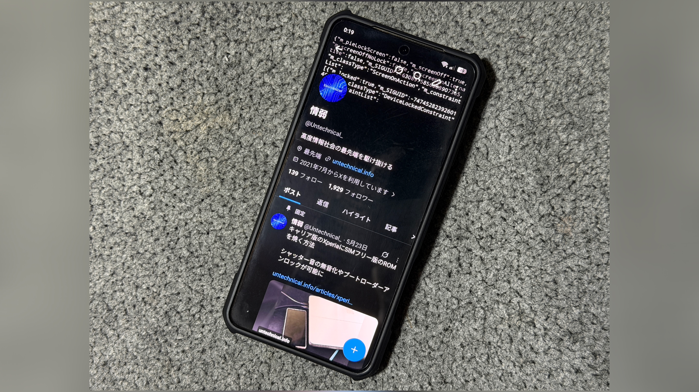
piko(X ReVanced)とは
Google Play ストアからインストールした正規のXアプリは、Xプレミアムに加入しないと広告が消せない。 AdGuardなどの広告ブロッカーを導入した端末のブラウザ、もしくはBraveなどの広告ブロッカー機能付きブラウザでXを開けば広告は表示されなくなるが、横スライドでのタブ移動などのアプリならではのスムーズな操作感を失う。 また、Xプレミアムに加入していないユーザーはアプリ内で動画のダウンロードができず、外部のアプリやサイトを使わないとダウンロードできない。 さらにXプレミアムに加入していても一部の動画はダウンロードできない。 そこで、正規のXアプリをベースに広告を消せるように、動画をダウンロードできるようにした、piko、別名X ReVancedというModアプリが公開されている。 ModアプリはブラウザからAPKファイルをダウンロードしてインストールできるが、正規のアプリと違い、アプリをアップデートをする際は新しいバージョンのAPKファイルをダウンロードして上書きインストールする必要がある。 ここではpiko(X ReVanced)の機能を紹介する。
目次
アプリをインストールする
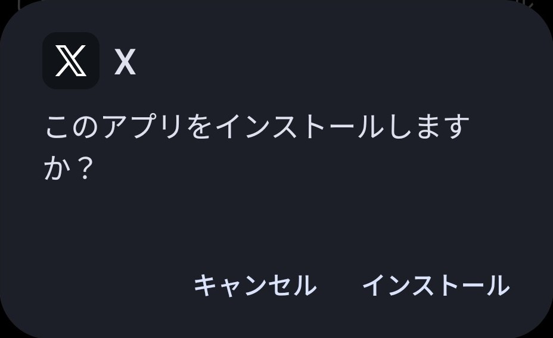
ここではpiko(ReVanced X)のインストール方法を解説する。
方法
1.既存のXをアンインストールする
Google Play ストアでインストールしたXをアンインストールする。
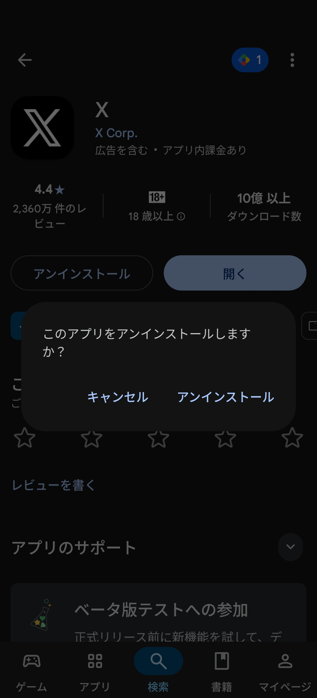
2.OSS Tracker REをインストールする
以下のリンクからOSS Tracker REをインストールする。 このアプリがなくてもpiko(X ReVanced)はインストールできるが、アップデートのたびにpiko(X ReVanced)が配信されているWebページを開く必要がでてくる。 OSS Tracker REはModアプリを公開しているGitHubのレポジトリのURLを入力することで、Modアプリのインストールやアップデートが簡単にできるようになるアプリである。 何と言ってもアップデートがあるたびに通知を配信してくれるようになるので、毎回Webページからアプリをダウンロードするよりもはるかに便利だ。
3.OSS Tracker REを開き、右上の "+" をタップする
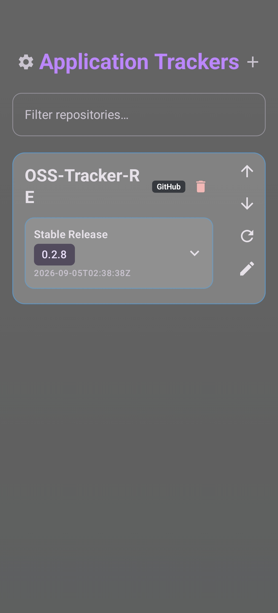
4. "Repository or APK URL" にpiko(X ReVanced)のGithubのリンクを入力する
pikoはMorpheというアプリで正規のXのapkに当てるパッチファイルとして、X ReVancedはReVanced Managerというアプリで正規のXのapkに当てるパッチファイルとして配信されているため、本来はそれらのアプリでパッチしてからインストールということになる。 しかし、piko(X ReVanced)がパッチ済みのXのapkを配信しているGithubのレポジトリがあり、それによってOSS Trackerのアプリから直接piko(X ReVanced)がパッチ済みのXをインストール、アップデートできるようになる。 以下のリンクを入力する。
https://github.com/monsivamon/twitter-apk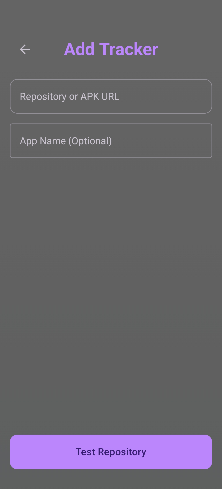
5. "twitter-apk" の横に表示された "+" をタップする
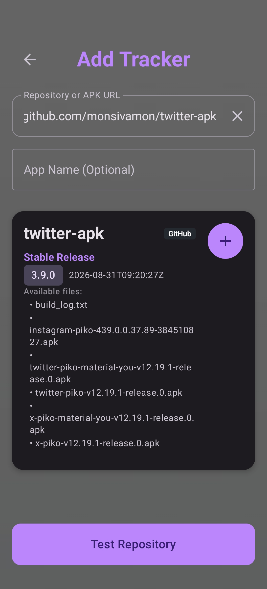
6. "twitter-apk" の下の "Stable Release" の右の "∨" をタップする
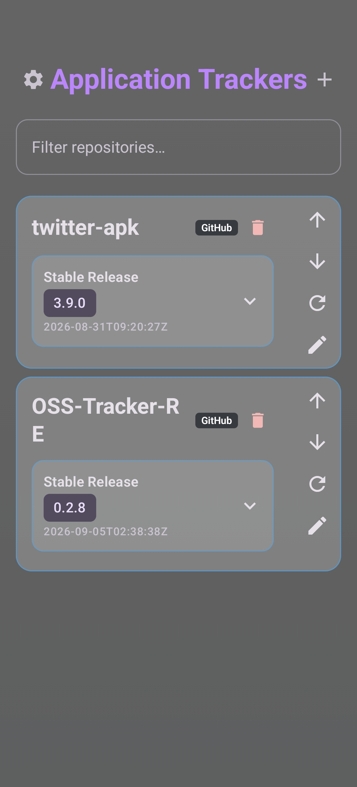
7.インストールするアプリを選んでタップし、ダウンロードする
piko(X ReVanced)がパッチ済みのXにはいくつか種類がある。 上から3番目から順にTwitterのUIでMaterial You デザイン、TwitterのUIで通常デザイン、XのUIでMaterial You デザイン、XのUIで通常デザインとなっている。
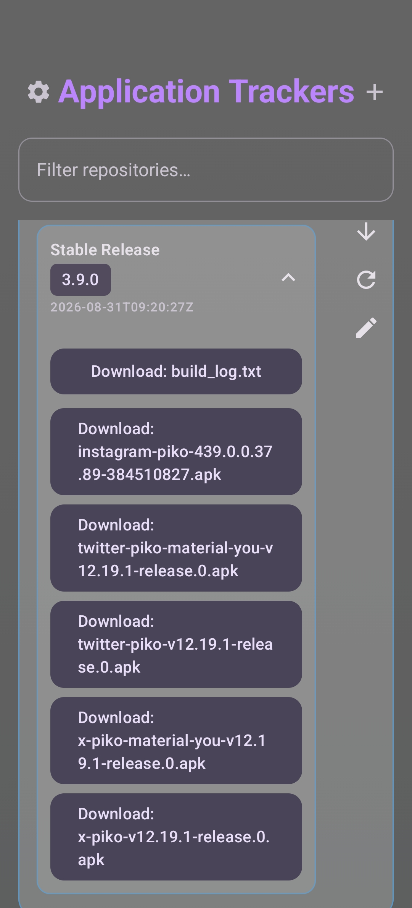
8. "Tap to Install: [7でダウンロードしたアプリ]" をタップし、インストールする
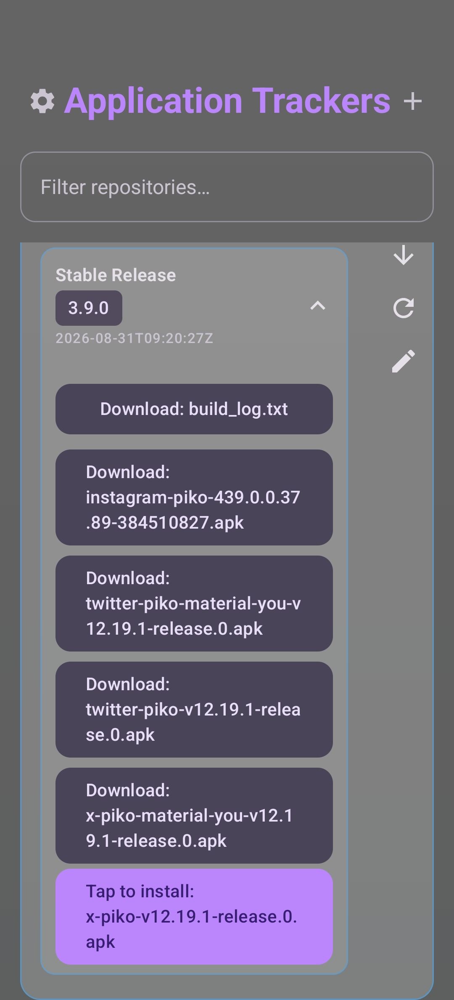
機能
ここではpiko(X ReVanced)の主な機能を紹介する。
設定画面の場所
1.プロフィールアイコンをタップする
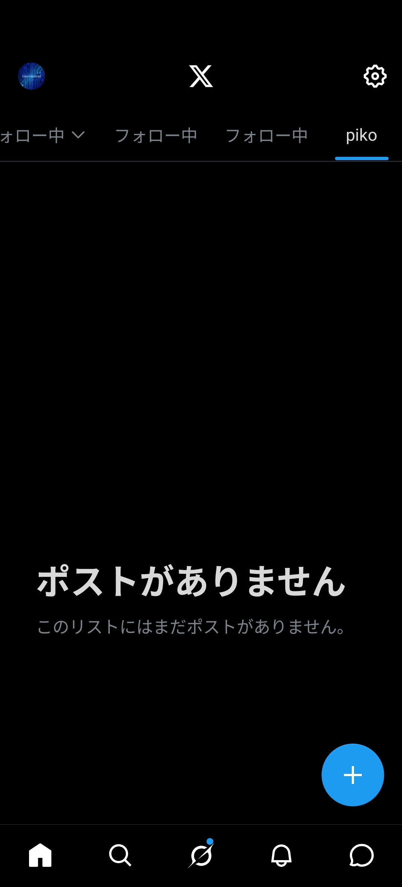
2. "設定とプライバシー" をタップする
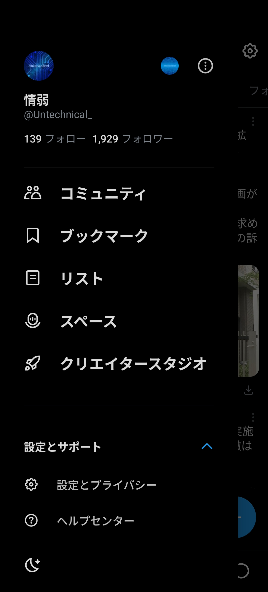
3. "Piko設定" をタップする
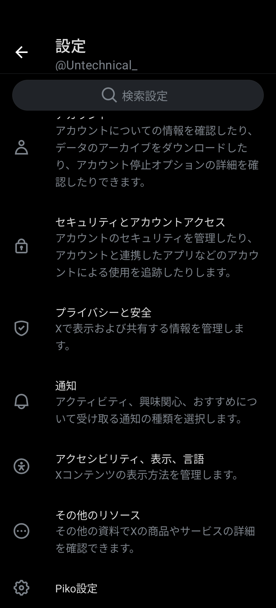
プレミアム
･ポストの取り消しを有効化
投稿直後に送信を一定時間保留し、公開前に取り消せる。
ポストの取り消しの設定
ポストの取消対象や時間を設定できる。
･自動PIPモードを有効化
アプリを閉じた際に自動的にPIPモードが有効化される。
･カスタムナビゲーション
デフォルトでホーム、Grok、話題を検索、通知、メッセージが表示されているナビゲーションバーをカスタマイズできる。 メッセージは "チャット" として表示されている。
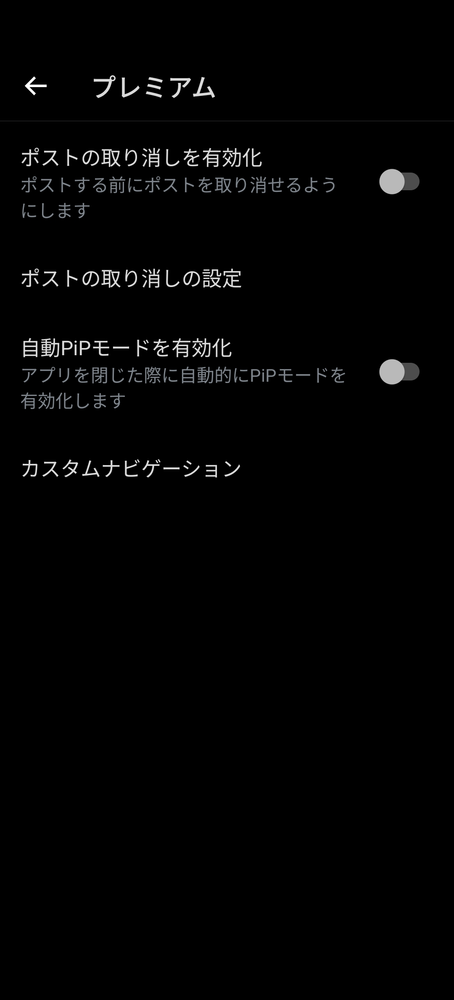
広告
･プロモーションポストを削除
プロモーションの表示があるポスト、いわゆる広告を消せる。
･｢おすすめユーザー｣を削除
･｢おすすめクリエイター｣を削除
･｢新しいコミュニティを見つける｣を削除
･｢ブックマークに再アクセス｣を削除
･｢フォロー中のユーザーが固定｣を削除
･関連のない返信を非表示
ポストの返信欄に表示される、｢もっと見つける｣が非表示になる。
･メッセージプロンプトを削除
･プレミアムの広告を削除
タイムラインでプレミアムの広告が表示されなくなる。
･検索結果からユーザー欄を削除
･今日のニュースを削除
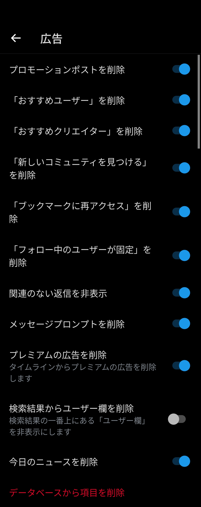
ネイティブ機能
･ネイティブダウンローダーを有効化
･常に最高画質の動画を自動でダウンロード
･ダウンロードアイコンを表示
･コピーアイコンを表示
解像度アイコンを表示
･インラインバーにダウンロードボタンを表示
写真や動画を長押ししなくても、それらを表示した際に返信、リポスト、いいね、表示回数、ブックマーク、共有が表示されているインラインバーの右下にダウンロードボタンが追加される。
･パブリックフォルダ
･サブフォルダ
･ファイル名のパターンを選択
共有メニューに翻訳ボタンを追加
･翻訳プロバイダー
･翻訳先の言語
･リーダーモードを有効化
･テキストのみモード
･引用ポストを非表示
･Grok分析を無効化
･テーマを変更
リーダーモードのキャッシュを削除
･[ツイートを画像として共有]を有効化
ポストの右上の "⋮" をタップした際に、 "ツイートを画像として共有" が表示されるようになり、ポストを画像として保存または共有できるようになる。
･キャプチャを自動削除
･ネイティブ共有メニューを有効化
･非表示にするネイティブ共有メニューの項目
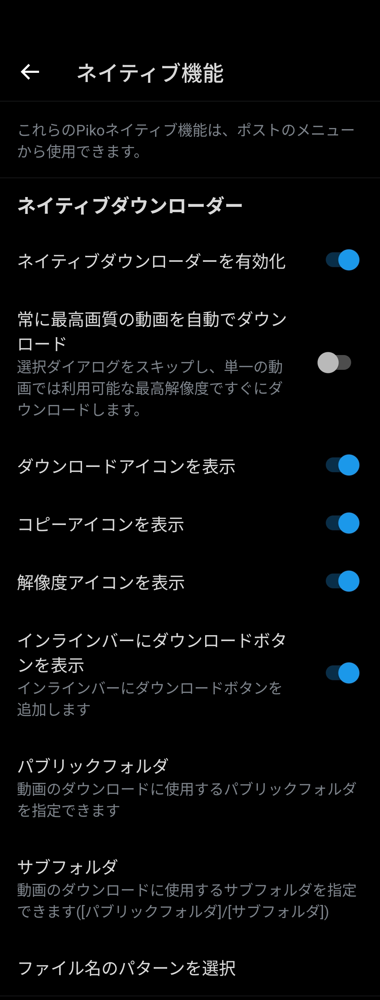
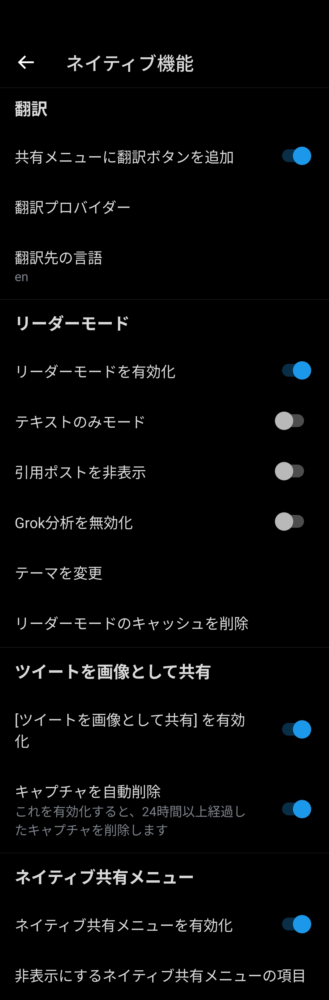
その他
･アップデート要求画面をブロック
"このアプリは旧バージョンのため利用できません。" というポップアップをブロックできる。
･Chirpフォントを有効化
･フローティングアクションボタンを削除
･フローティングアクションメニューを削除
･おすすめのユーザーを削除
･表示回数を削除
･数字を四捨五入
･ポストのデバッグメニューを有効化
･カスタム共有ドメイン
･フォローインジケーターを非表示
･検索候補を非表示
話題を検索で検索履歴が表示されなくなる。 ただし、検索履歴は "検索候補を一時停止" をオンにするまで保存される。
･検索候補を一時停止
話題を検索で検索履歴が保存されなくなる。 ただし既存の検索履歴は削除されるか、 "検索候補を非表示" をオンにするまで表示される。
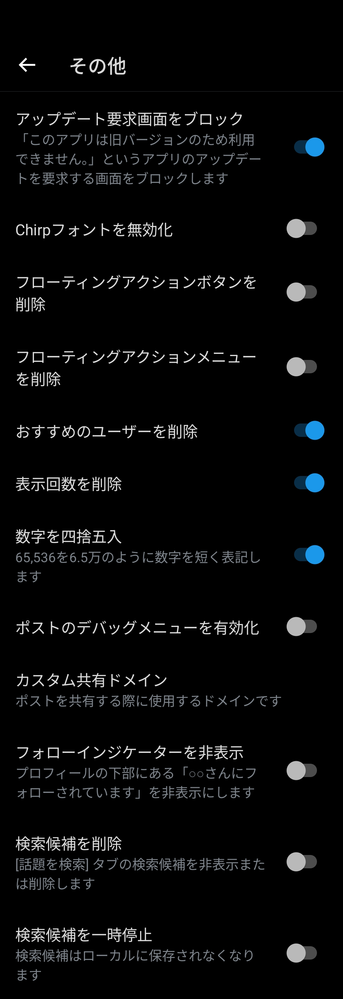
カスタマイズ
･プロフィールタブから非表示にする項目
･タイムラインタブから非表示にする項目
･[話題を検索] タブから非表示にする項目
･サイドバーから非表示にする項目
･ナビゲーションバーから非表示にする項目
･インラインバーから非表示にする項目
･検索結果のタブから非表示にする項目
･通知タブから非表示にする項目
･デフォルトの返信の並び替え
･検索候補から非表示にする項目
･ポストのフォントサイズ
･アプリアイコンを変更
･サイドバーに設定ボタン追加
･プロフィールの詳細
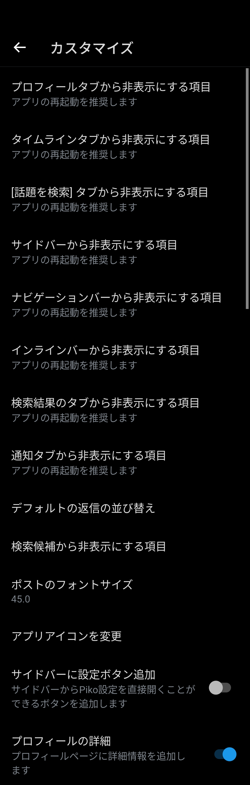
タイムライン
･起動時の自動TLスクロールを無効化
アプリを開いた際、タイムラインが自動で更新されず、前回見ていた位置が表示される。
･ポストのソースラベルを表示
･ライブスレッドを削除
タイムライン上部に表示されるスペースの欄が表示されなくなる。
･バナーを削除
タイムライン上部に表示される "新しい投稿" が表示されなくなる。
･TLのブックマークアイコンを削除
･投票結果を表示
投票せずに投票結果を確認できるようになる。
･短縮URLを無効化
コミュニティノートを削除
翻訳を強制的に有効化
･プロモーションボタンを削除
自分のポストに表示される "プロモーションする" が表示されなくなる。
･没入型プレーヤーを無効化
動画視聴時に上にスワイプして次の動画を再生する機能を無効化する。
･動画の自動スクロールを有効化
動画視聴時に次の動画が自動再生されるようになる。
･｢非表示の返信｣ を削除
ポストの返信欄の "非表示の返信" が表示されなくなる。
･[フォローする]ボタンを非表示
ポストから "フォローする" , "フォローバックする" , "サブスクライブする" が表示されなくなる。
･センシティブなメディアを自動で表示
･コミュニティバッジを非表示
･ナビゲーションバーからバッジを非表示
ホーム、Grok、話題を検索、通知、メッセージが表示されているナビゲーションバーの通知の部分からバッジとカウントが表示されなくなる。
･ポストのインラインビュー指標を非表示
タイムラインでのポストの下の返信、いいね、リポスト、表示回数のカウントが表示されなくなる。
･ポストの詳細な閲覧指標を非表示
ポストを表示した際のポストの下のリポスト、引用、いいね、ブックマークのカウントが表示されなくなる。
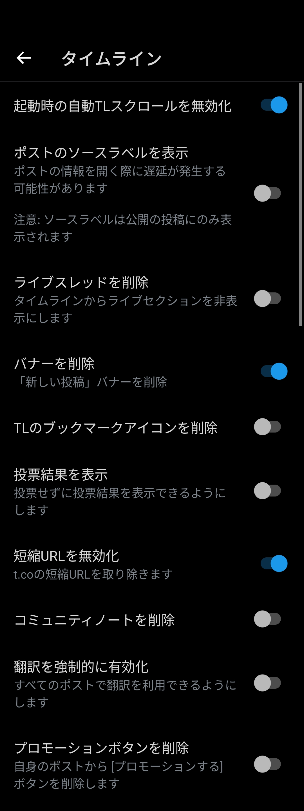
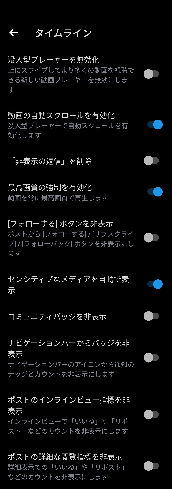
関連記事
プロフィール

高度情報社会の最先端を駆け抜ける